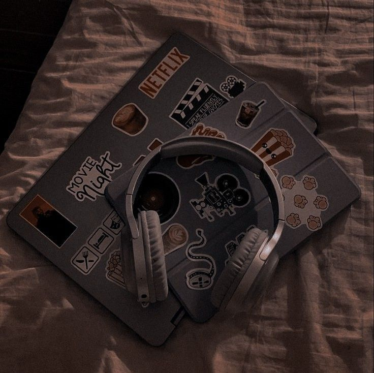

My Favorite Hobbies: A Peek Into What Brings Me Joy

CTU Danao Campus
Hobbies are more than just pastimes; they are gateways to joy, creativity, and relaxation. They help us discover ourselves, unwind from life's chaos, and even connect with others who share similar passions. Here's a glimpse into some of my favorite hobbies that make life more vibrant and fulfilling.
1. Reading
Books are my escape to different worlds. Whether it’s immersing myself in the fantasy realms of epic adventures or gaining new perspectives through thought-provoking non-fiction, reading fuels my imagination and broadens my understanding of the world. I love the quiet moments with a cup of tea and a good book—pure bliss!
2. Photography
Capturing the beauty of the world through a lens is both an art and a joy. I find immense satisfaction in freezing a fleeting moment, whether it’s a breathtaking sunset, a candid smile, or the intricate patterns of nature. Photography allows me to appreciate the details and find beauty in the ordinary.
3. Cooking and Baking
The kitchen is my creative playground. Experimenting with flavors, trying new recipes, and sharing meals with loved ones is a deeply fulfilling experience. Baking, in particular, feels therapeutic—the process of mixing, measuring, and waiting for that perfect golden crust brings me a sense of accomplishment.
4. Music
Listening to music is a hobby that never fails to uplift my spirits. From soothing classical melodies to high-energy pop beats, music resonates with my emotions. Sometimes, I even dabble in playing instruments—it’s not just fun but also a way to express myself creatively.
5. Gardening
There’s something magical about nurturing plants and watching them thrive. Gardening teaches patience and brings me closer to nature. Whether it’s planting colorful flowers or growing fresh herbs, I love the sense of peace that comes with tending to my little green space.
6. Writing
Writing has always been a therapeutic outlet for me. Whether I’m penning down my thoughts in a journal, crafting stories, or blogging about my interests, it’s a way to organize my thoughts and express my ideas. It’s a hobby that helps me connect with myself and with others.
7. Exploring Nature
Hiking and spending time outdoors is my way of recharging. The fresh air, scenic views, and serenity of nature have a calming effect on my mind. It’s also a great way to stay active while appreciating the natural beauty around us.
Why Hobbies Matter
Hobbies are not just activities—they are integral to our well-being. They offer a break from daily routines, spark creativity, and bring a sense of accomplishment. Most importantly, they remind us to cherish the little things in life.
What are some of your favorite hobbies? I’d love to hear about the activities that make your heart sing!